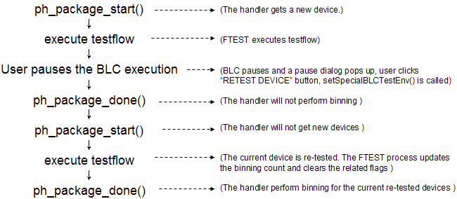
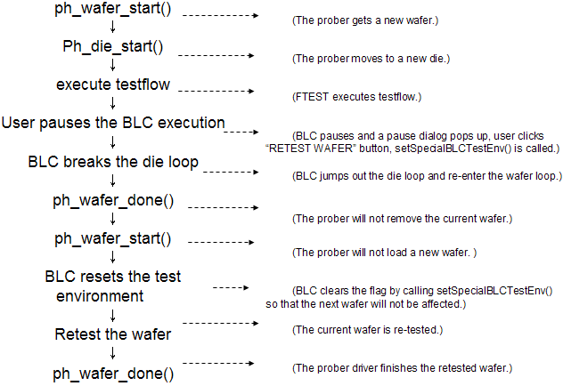

SetSpecialBLCTestEnv()
This synchronous command sets the environment for the special test operations: RETEST DEVICE, CHECK DEVICE, RETEST WAFER, REFERENCE WAFER and RESTORE ENV (clear the production flag settings in case the settings affect the succedent test). The environment means the settings of the production flags which are used by the FTEST process and prober/handler driver when handling the special events. This API is generally called when the corresponding buttons on a pause GUI dialog are clicked.
The following two figures show the test logic for RETEST DEVICE operation(CHECK DEVICE is similar) and the test logic for RETEST WAFER operation(REFERENCE WAFER is similar).


SUCCESS is returned if no error occurs. Otherwise, an error object will be returned indicating the error code, description and severity.
Code |
Typical Description |
Severity |
|---|---|---|
PARAMETER_EXCEPTION |
|
RECOVERABLE |
ILLEGAL_OPERATION |
|
RECOVERABLE |
Parameters
I/O |
Parameter |
Description |
|---|---|---|
I |
OPERATION_TYPE |
The type of the BLC special test operation. It can be RETEST_DEVICE, RETEST_WAFER, CHECK_DEVICE, REFERENCE_WAFER, or RESTORE_ENV. |
Prototype
ParamList inputParams;
Status syncCommand("SetSpecialBLCTestEnv", inputParams); Example
ParamList inputParams;
inputParams["OPERATION_TYPE"] = "RETEST_DEVICE";
Status retVal = syncCommand("SetSpecialBLCTestEnv", inputParams);
if ( retVal.isError() )
{
cout<<"error code="<< retVal.code() << " description="
<< retVal.text() << endl;
}